แปลหัวข้อย่อยตามต้นฉบับ
ลำดับและหมายเลขตามข้อความในไฟล์ แม้ต้นฉบับใช้เลขหัวข้อซ้ำก็เก็บไว้เพื่อเทียบได้
| หัวข้อ | ภาษาไทย | ต้นฉบับ |
|---|---|---|
| 14-1 | เครือข่ายไร้สาย IEEE 802.11 | IEEE 802.11 |
| 14-2 | บลูทูท | BLUETOOTH |
เปิดไฟล์ต้นฉบับ 02102010_Network_Chapter8.pdf
เส้นทางต้นฉบับ: Network/02102010_Network_Chapter8.pdf
ลำดับและหมายเลขตามข้อความในไฟล์ แม้ต้นฉบับใช้เลขหัวข้อซ้ำก็เก็บไว้เพื่อเทียบได้
| หัวข้อ | ภาษาไทย | ต้นฉบับ |
|---|---|---|
| 14-1 | เครือข่ายไร้สาย IEEE 802.11 | IEEE 802.11 |
| 14-2 | บลูทูท | BLUETOOTH |
IEEE 802.11 อธิบาย WLAN BSS คือกลุ่มสถานีที่เกี่ยวข้องกัน หากไม่มี AP ในแบบที่สไลด์เรียก ad hoc จะสื่อสารกันโดยตรง ส่วน Infrastructure BSS มี AP และเชื่อมต่อเครือข่ายกระจายต่อได้ หลาย BSS เชื่อมกันเป็น ESS ตามสถาปัตยกรรมที่เรียน
AP เป็นจุดเข้าถึงเครือข่ายชั้นลิงก์ ไม่จำเป็นต้องเป็น router หรือ DHCP server แต่กล่อง wireless router สำหรับบ้านรวมหลายหน้าที่ ได้แก่ AP, Ethernet switch, IP router, DHCP และ NAT ไว้ด้วยกัน
กลับสารบัญ ↑Wi-Fi ใช้ carrier sensing, backoff และ ACK ตามกลไกที่กำหนด ข้อมูลอาจชนหรือสูญหายแม้ผู้ส่งฟังแล้ว เพราะมี hidden terminal ซึ่งอยู่ไกลกันจนไม่ได้ยินกัน แต่ต่างส่งถึง AP ตัวเดียวกัน
RTS/CTS ช่วยลดปัญหาบางรูปแบบด้วยการแจ้งจองช่วงส่ง แต่เพิ่ม overhead ไม่ได้ทำให้ปลอด collision ทุกกรณี การใช้คลื่นร่วมกันต้องคิด airtime, signal strength, interference, ระยะ และสิ่งกีดขวาง
กลับสารบัญ ↑การตั้ง SSID ให้ตรงและ association สำเร็จเป็นคนละขั้นกับการได้ IP และการออก Internet SSID ไม่ใช่รหัสผ่าน และการซ่อน SSID ไม่ใช่การเข้ารหัสข้อมูล การเลือกวิธีรักษาความปลอดภัยต้องแยก encryption, authentication และนโยบายการเข้าถึง
เอกสารเก่ามีตัวอย่าง WEP และมาตรฐาน 802.11 รุ่นเก่า ให้ใช้เพื่อเข้าใจพัฒนาการและทำโจทย์ตามข้อมูลที่ให้ ไม่สรุปว่า WEP ให้ความปลอดภัยเพียงพอสำหรับการใช้งานจากการที่มีอยู่ในสไลด์
กลับสารบัญ ↑Bluetooth ใช้เชื่อมอุปกรณ์ระยะใกล้และมีวิธีจัดการกลุ่ม/ช่องต่างจาก WLAN สไลด์อธิบาย piconet และ scatternet ในสถาปัตยกรรมยุคนั้น ตัวเลขระยะและอัตราส่งขึ้นกับรุ่นและสภาพแวดล้อม ไม่ใช่เพียงชื่อ Bluetooth แล้วตอบเป็นค่าคงที่
เฉลยและเหตุผล: ตรวจ IP/mask, default gateway, DHCP, DNS และเส้นทาง upstream ตามลำดับ การ association ไม่ยืนยันการสื่อสาร IP ทั้งระบบ
เฉลยและเหตุผล: AP คือหน้าที่เชื่อมไร้สายในลิงก์ ส่วน wireless router เป็นอุปกรณ์รวมหลายหน้าที่ รวม routing ระหว่างเครือข่ายได้ด้วย
จำให้ได้: แยก SSID / association / authentication / DHCP / routing เป็นคนละขั้น
กลับสารบัญ ↑เรียงตามหน้า PDF
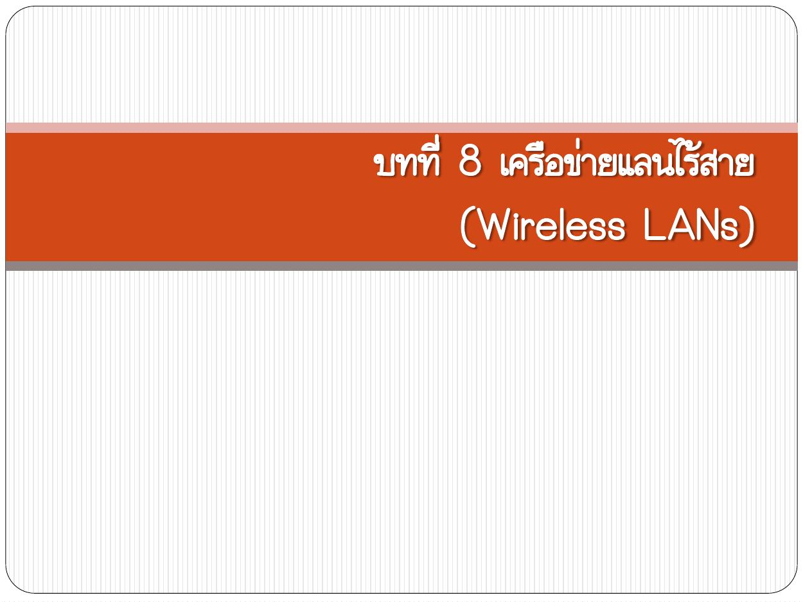
คลิกภาพเพื่อเปิดขยาย
บทที่ 8 เครือข่ายแลนไร้สาย
(Wireless LANs)ทบทวนภาษาไทย: Wireless LAN และ Bluetooth
กลับสารบัญ ↑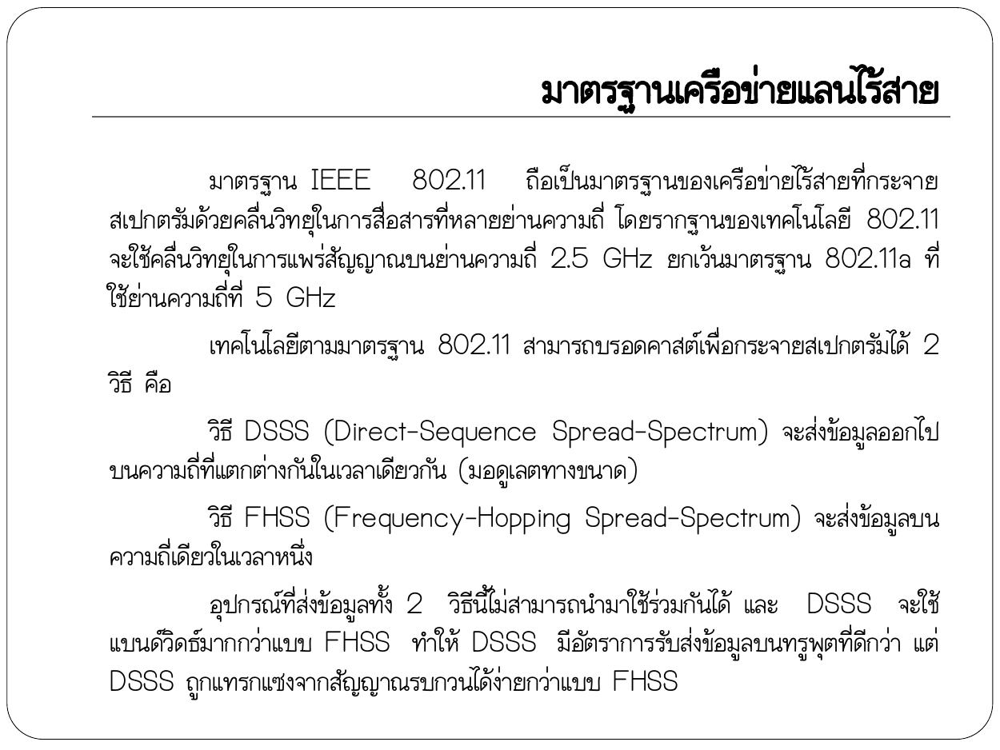
คลิกภาพเพื่อเปิดขยาย
มาตรฐานเครือข่ายแลนไร้สาย
มาตรฐาน IEEE 802.11 ถือเป็นมาตรฐานของเครือข่ายไร้สายที่กระจาย
สเปกตรัมด้วยคลื่นวิทยุในการสื่อสารที่หลายย่านความถี่ โดยรากฐานของเทคโนโลยี 802.11
จะใช้คลื่นวิทยุในการแพร่สัญญาณบนย่านความถี่ 2.5 GHz ยกเว้นมาตรฐาน 802.11a ที่
ใช้ย่านความถี่ที่ 5 GHz
เทคโนโลยีตามมาตรฐาน 802.11 สามารถบรอดคาสต์เพื่อกระจายสเปกตรัมได้ 2
วิธี คือ
วิธี DSSS (Direct-Sequence Spread-Spectrum) จะส่งข้อมูลออกไป
บนความถี่ที่แตกต่างกันในเวลาเดียวกัน (มอดูเลตทางขนาด)
วิธี FHSS (Frequency-Hopping Spread-Spectrum) จะส่งข้อมูลบน
ความถี่เดียวในเวลาหนึ่ง
อุปกรณ์ที่ส่งข้อมูลทั้ง 2 วิธีนี้ไม่สามารถนามาใช้ร่วมกันได้ และ DSSS จะใช้
แบนด์วิดธ์มากกว่าแบบ FHSS ทาให้ DSSS มีอัตราการรับส่งข้อมูลบนทรูพุตที่ดีกว่า แต่
DSSS ถูกแทรกแซงจากสัญญาณรบกวนได้ง่ายกว่าแบบ FHSSทบทวนภาษาไทย: Wireless LAN และ Bluetooth
กลับสารบัญ ↑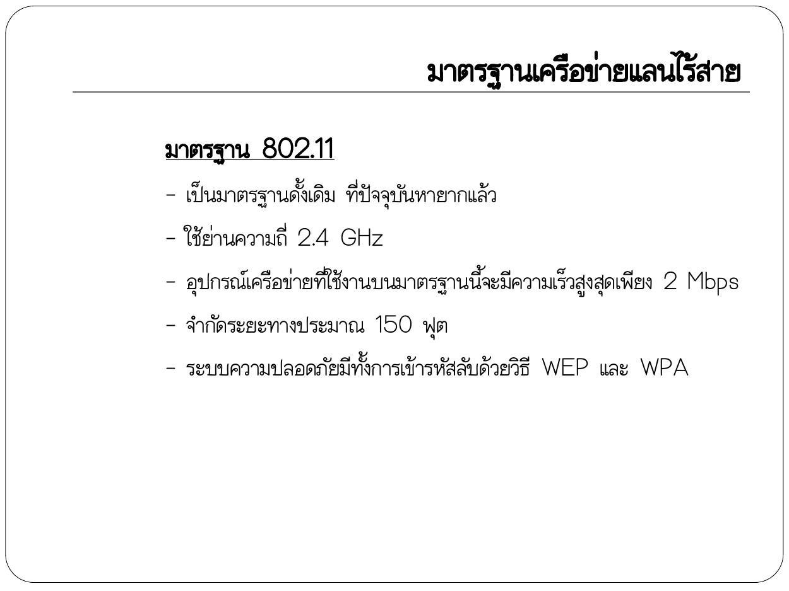
คลิกภาพเพื่อเปิดขยาย
มาตรฐานเครือข่ายแลนไร้สาย มาตรฐาน 802.11 - เป็นมาตรฐานดั้งเดิม ที่ปัจจุบันหายากแล้ว - ใช้ย่านความถี่ 2.4 GHz - อุปกรณ์เครือข่ายที่ใช้งานบนมาตรฐานนี้จะมีความเร็วสูงสุดเพียง 2 Mbps - จากัดระยะทางประมาณ 150 ฟุต - ระบบความปลอดภัยมีทั้งการเข้ารหัสลับด้วยวิธี WEP และ WPA
ทบทวนภาษาไทย: Wireless LAN และ Bluetooth
กลับสารบัญ ↑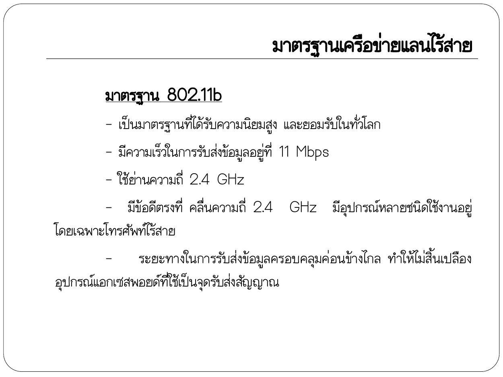
คลิกภาพเพื่อเปิดขยาย
มาตรฐานเครือข่ายแลนไร้สาย
มาตรฐาน 802.11b
- เป็นมาตรฐานที่ได้รับความนิยมสูง และยอมรับในทั่วโลก
- มีความเร็วในการรับส่งข้อมูลอยู่ที่ 11 Mbps
- ใช้ย่านความถี่ 2.4 GHz
- มีข้อดีตรงที่ คลื่นความถี่ 2.4 GHz มีอุปกรณ์หลายชนิดใช้งานอยู่
โดยเฉพาะโทรศัพท์ไร้สาย
- ระยะทางในการรับส่งข้อมูลครอบคลุมค่อนข้างไกล ทาให้ไม่สิ้นเปลือง
อุปกรณ์แอกเซสพอยด์ที่ใช้เป็นจุดรับส่งสัญญาณทบทวนภาษาไทย: Wireless LAN และ Bluetooth
กลับสารบัญ ↑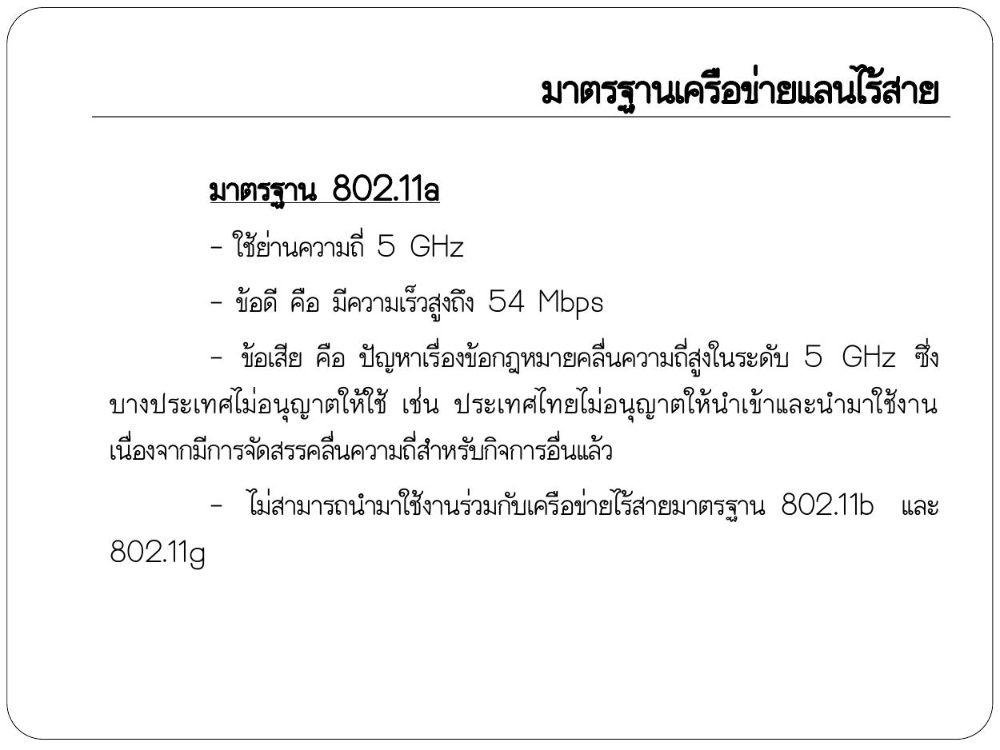
คลิกภาพเพื่อเปิดขยาย
มาตรฐานเครือข่ายแลนไร้สาย
มาตรฐาน 802.11a
- ใช้ย่านความถี่ 5 GHz
- ข้อดี คือ มีความเร็วสูงถึง 54 Mbps
- ข้อเสีย คือ ปัญหาเรื่องข้อกฎหมายคลื่นความถี่สูงในระดับ 5 GHz ซึ่ง
บางประเทศไม่อ นุญ าตให้ ใช้ เช่ น ประเทศไทยไม่อ นุญ าตให้น าเข้า และน ามาใช้ง าน
เนื่องจากมีการจัดสรรคลื่นความถี่สาหรับกิจการอื่นแล้ว
- ไม่สามารถนามาใช้งานร่วมกับเครือข่ายไร้สายมาตรฐาน 802.11b และ
802.11gทบทวนภาษาไทย: Wireless LAN และ Bluetooth
กลับสารบัญ ↑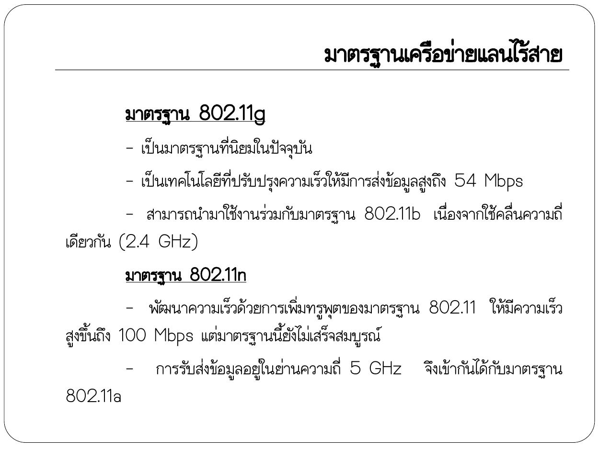
คลิกภาพเพื่อเปิดขยาย
มาตรฐานเครือข่ายแลนไร้สาย
มาตรฐาน 802.11g
- เป็นมาตรฐานที่นิยมในปัจจุบัน
- เป็นเทคโนโลยีที่ปรับปรุงความเร็วให้มีการส่งข้อมูลสูงถึง 54 Mbps
- สามารถนามาใช้งานร่วมกับมาตรฐาน 802.11b เนื่องจากใช้คลื่นความถี่
เดียวกัน (2.4 GHz)
มาตรฐาน 802.11n
- พัฒนาความเร็วด้วยการเพิ่มทรูพุตของมาตรฐาน 802.11 ให้มีความเร็ว
สูงขึ้นถึง 100 Mbps แต่มาตรฐานนี้ยังไม่เสร็จสมบูรณ์
- การรับส่งข้อมูลอยู่ในย่านความถี่ 5 GHz จึงเข้ากันได้กับมาตรฐาน
802.11aทบทวนภาษาไทย: Wireless LAN และ Bluetooth
กลับสารบัญ ↑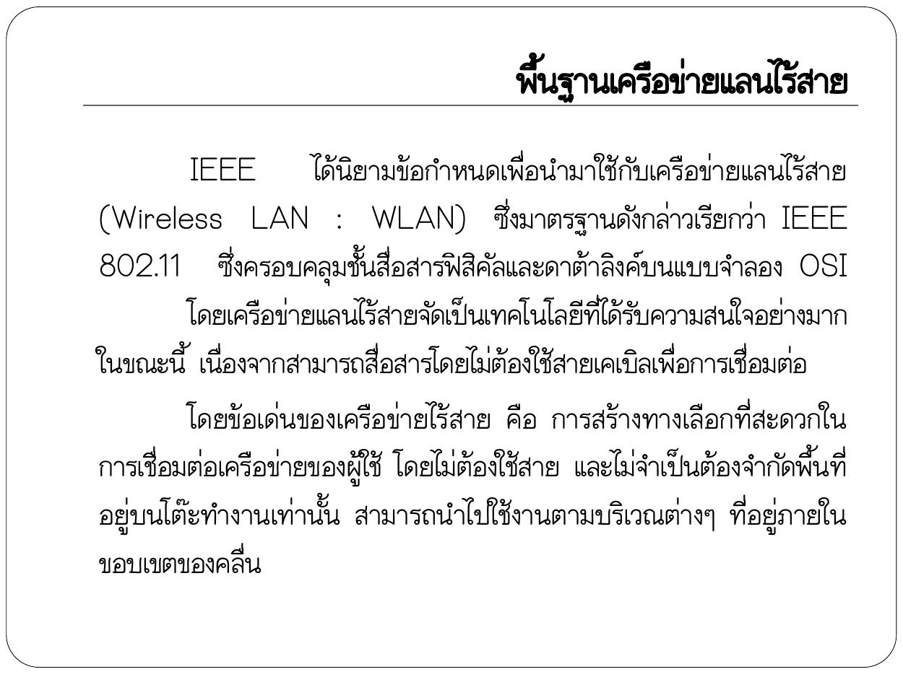
คลิกภาพเพื่อเปิดขยาย
พื้นฐานเครือข่ายแลนไร้สาย
IEEE ได้นิยามข้อกาหนดเพื่อนามาใช้กับเครือข่ายแลนไร้สาย
(Wireless LAN : WLAN) ซึ่งมาตรฐานดังกล่าวเรียกว่า IEEE
802.11 ซึ่งครอบคลุมชั้นสื่อสารฟิสิคัลและดาต้าลิงค์บนแบบจาลอง OSI
โดยเครือข่ายแลนไร้สายจัดเป็นเทคโนโลยีที่ได้รับความสนใจอย่างมาก
ในขณะนี้ เนื่องจากสามารถสื่อสารโดยไม่ต้องใช้สายเคเบิลเพื่อการเชื่อมต่อ
โดยข้อเด่นของเครือข่ายไร้สาย คือ การสร้างทางเลือกที่สะดวกใน
การเชื่อมต่อเครือข่ายของผู้ใช้ โดยไม่ต้องใช้สาย และไม่จาเป็นต้องจากัดพื้นที่
อยู่บนโต๊ะทางานเท่านั้น สามารถนาไปใช้งานตามบริเวณต่างๆ ที่อยู่ภายใน
ขอบเขตของคลื่นทบทวนภาษาไทย: Wireless LAN และ Bluetooth
กลับสารบัญ ↑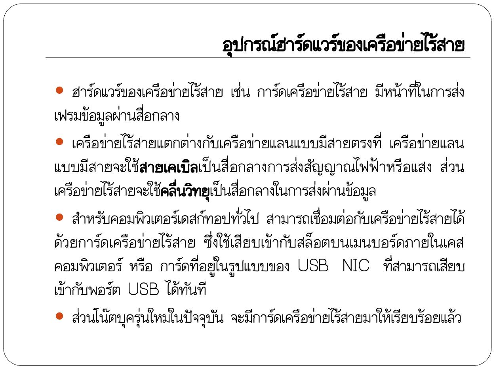
คลิกภาพเพื่อเปิดขยาย
อุปกรณ์ฮาร์ดแวร์ของเครือข่ายไร้สาย ฮาร์ดแวร์ของเครือข่ายไร้สาย เช่น การ์ดเครือข่ายไร้สาย มีหน้าที่ในการส่ง เฟรมข้อมูลผ่านสื่อกลาง เครือข่ายไร้สายแตกต่างกับเครือข่ายแลนแบบมีสายตรงที่ เครือข่ายแลน แบบมีสายจะใช้ สายเคเบิล เป็นสื่อกลางการส่งสัญญาณไฟฟ้าหรือแสง ส่วน เครือข่ายไร้สายจะใช้คลื่นวิทยุเป็นสื่อกลางในการส่งผ่านข้อมูล สาหรับคอมพิวเตอร์เดสก์ทอปทั่วไป สามารถเชื่อมต่อกับเครือข่ายไร้สายได้ ด้วยการ์ดเครือข่ายไร้สาย ซึ่งใช้เสียบเข้ากับสล็อตบนเมนบอร์ดภายในเคส คอมพิวเตอร์ หรือ การ์ดที่อยู่ในรูปแบบของ USB NIC ที่สามารถเสียบ เข้ากับพอร์ต USB ได้ทันที ส่วนโน๊ตบุครุ่นใหม่ในปัจจุบัน จะมีการ์ดเครือข่ายไร้สายมาให้เรียบร้อยแล้ว
ทบทวนภาษาไทย: Wireless LAN และ Bluetooth
กลับสารบัญ ↑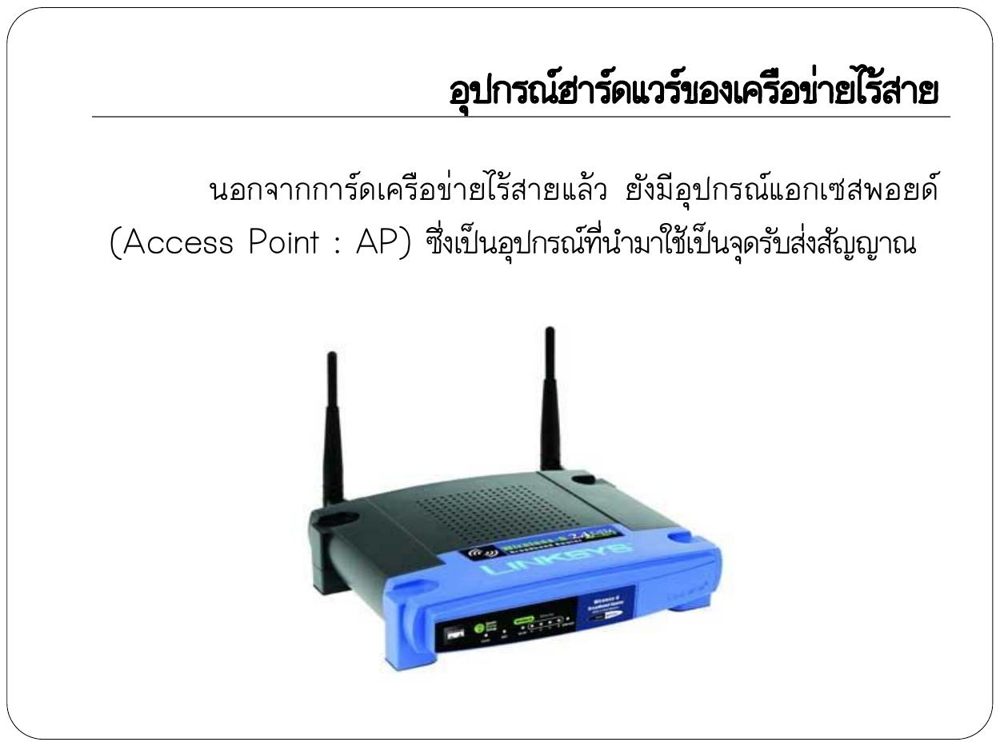
คลิกภาพเพื่อเปิดขยาย
อุปกรณ์ฮาร์ดแวร์ของเครือข่ายไร้สาย
นอกจากการ์ ด เครื อ ข่ า ยไร้ ส ายแล้ ว ยั ง มี อุ ป กรณ์ แ อกเซสพอยด์
(Access Point : AP) ซึ่งเป็นอุปกรณ์ที่นามาใช้เป็นจุดรับส่งสัญญาณทบทวนภาษาไทย: Wireless LAN และ Bluetooth
กลับสารบัญ ↑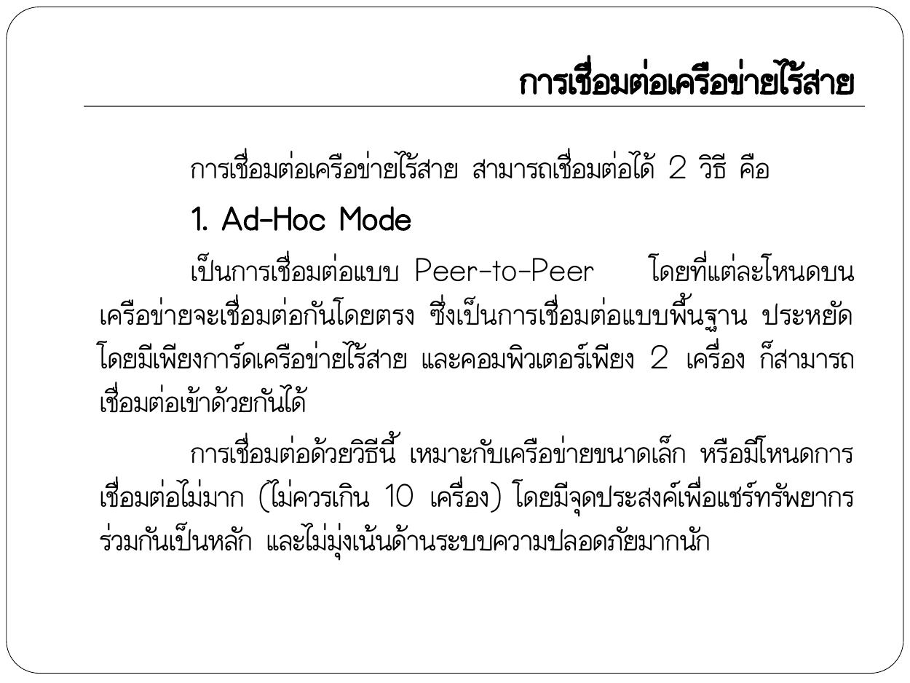
คลิกภาพเพื่อเปิดขยาย
การเชือ่ มต่อเครือข่ายไร้สาย
การเชื่อมต่อเครือข่ายไร้สาย สามารถเชื่อมต่อได้ 2 วิธี คือ
1. Ad-Hoc Mode
เป็นการเชื่อมต่อแบบ Peer-to-Peer โดยที่แต่ละโหนดบน
เครือข่ายจะเชื่อมต่อกันโดยตรง ซึ่งเป็นการเชื่อมต่อแบบพื้นฐาน ประหยัด
โดยมีเพียงการ์ดเครือข่ายไร้สาย และคอมพิวเตอร์เพียง 2 เครื่อง ก็สามารถ
เชื่อมต่อเข้าด้วยกันได้
การเชื่อมต่อด้วยวิธีนี้ เหมาะกับเครือข่ายขนาดเล็ก หรือมีโหนดการ
เชื่อมต่อไม่มาก (ไม่ควรเกิน 10 เครื่อง) โดยมีจุดประสงค์เพื่อแชร์ทรัพยากร
ร่วมกันเป็นหลัก และไม่มุ่งเน้นด้านระบบความปลอดภัยมากนักทบทวนภาษาไทย: Wireless LAN และ Bluetooth
กลับสารบัญ ↑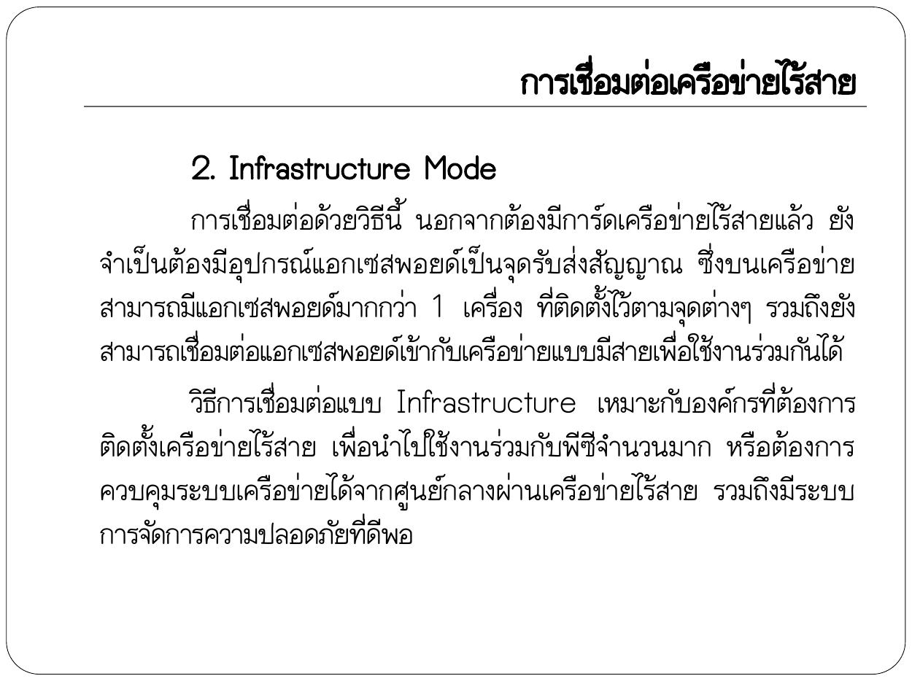
คลิกภาพเพื่อเปิดขยาย
การเชือ่ มต่อเครือข่ายไร้สาย
2. Infrastructure Mode
การเชื่อมต่อด้วยวิธีนี้ นอกจากต้องมีการ์ดเครือข่ายไร้สายแล้ว ยัง
จาเป็นต้องมีอุปกรณ์แอกเซสพอยด์เป็นจุดรับส่งสัญญาณ ซึ่งบนเครือข่าย
สามารถมีแอกเซสพอยด์มากกว่า 1 เครื่อง ที่ติดตั้งไว้ตามจุดต่างๆ รวมถึงยัง
สามารถเชื่อมต่อแอกเซสพอยด์เข้ากับเครือข่ายแบบมีสายเพื่อใช้งานร่วมกันได้
วิธีการเชื่อมต่อแบบ Infrastructure เหมาะกับองค์กรที่ต้องการ
ติดตั้งเครือข่ายไร้สาย เพื่อนาไปใช้งานร่วมกับพีซีจานวนมาก หรือต้องการ
ควบคุมระบบเครือข่ายได้จากศูนย์กลางผ่านเครือข่ายไร้สาย รวมถึงมีระบบ
การจัดการความปลอดภัยที่ดีพอทบทวนภาษาไทย: Wireless LAN และ Bluetooth
กลับสารบัญ ↑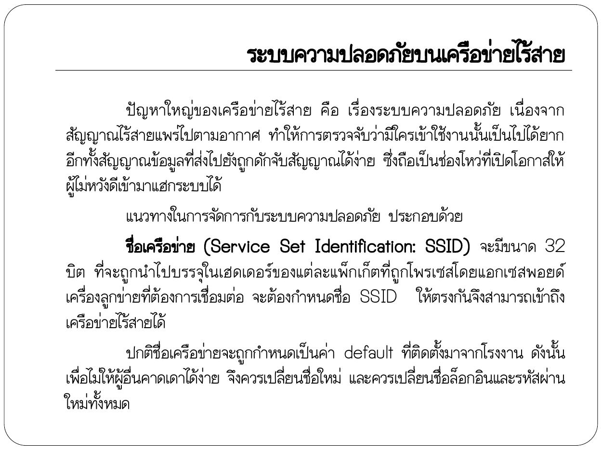
คลิกภาพเพื่อเปิดขยาย
ระบบความปลอดภัยบนเครือข่ายไร้สาย
ปัญหาใหญ่ของเครือข่ายไร้สาย คือ เรื่องระบบความปลอดภัย เนื่องจาก
สัญญาณไร้สายแพร่ไปตามอากาศ ทาให้การตรวจจับว่ามีใครเข้าใช้งานนั้นเป็นไปได้ยาก
อีกทั้งสัญญาณข้อมูลที่ส่งไปยังถูกดักจับสัญญาณได้ง่าย ซึ่งถือเป็นช่องโหว่ที่เปิดโอกาสให้
ผู้ไม่หวังดีเข้ามาแฮกระบบได้
แนวทางในการจัดการกับระบบความปลอดภัย ประกอบด้วย
ชื่อเครือข่าย (Service Set Identification: SSID) จะมีขนาด 32
บิต ที่จะถูกนาไปบรรจุในเฮดเดอร์ของแต่ล ะแพ็กเก็ต ที่ถูกโพรเซสโดยแอกเซสพอยด์
เครื่องลูกข่ายที่ต้องการเชื่อมต่อ จะต้องกาหนดชื่อ SSID ให้ตรงกันจึงสามารถเข้าถึง
เครือข่ายไร้สายได้
ปกติชื่อเครือข่ายจะถูกกาหนดเป็นค่า default ที่ติดตั้งมาจากโรงงาน ดังนั้น
เพื่อไม่ให้ผู้อื่นคาดเดาได้ง่าย จึงควรเปลี่ยนชื่อใหม่ และควรเปลี่ยนชื่อล็อกอินและรหัสผ่าน
ใหม่ทั้งหมดทบทวนภาษาไทย: Wireless LAN และ Bluetooth
กลับสารบัญ ↑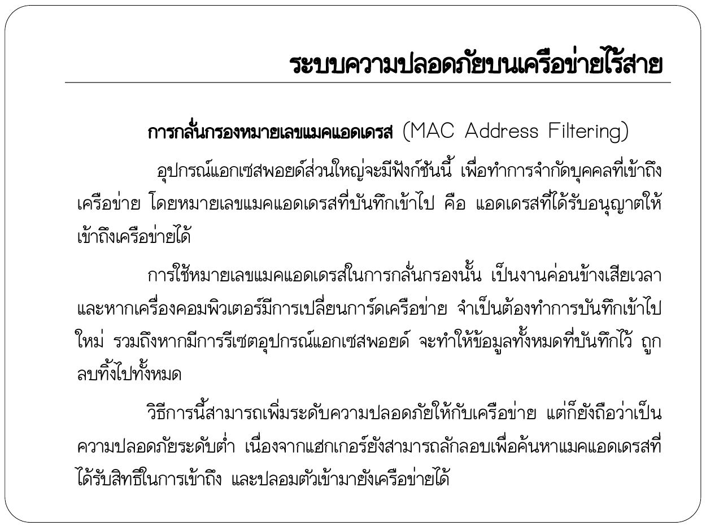
คลิกภาพเพื่อเปิดขยาย
ระบบความปลอดภัยบนเครือข่ายไร้สาย
การกลั่นกรองหมายเลขแมคแอดเดรส (MAC Address Filtering)
อุปกรณ์แอกเซสพอยด์ส่วนใหญ่จะมีฟังก์ชันนี้ เพื่อทาการจากัดบุคคลที่เข้าถึง
เครือข่าย โดยหมายเลขแมคแอดเดรสที่บันทึกเข้าไป คือ แอดเดรสที่ได้รับอนุญาตให้
เข้าถึงเครือข่ายได้
การใช้หมายเลขแมคแอดเดรสในการกลั่นกรองนั้น เป็นงานค่อนข้างเสียเวลา
และหากเครื่องคอมพิวเตอร์มีการเปลี่ยนการ์ดเครือข่าย จาเป็นต้องทาการบันทึกเข้าไป
ใหม่ รวมถึงหากมีการรีเซตอุปกรณ์แอกเซสพอยด์ จะทาให้ข้อมูลทั้งหมดที่บันทึกไว้ ถูก
ลบทิ้งไปทั้งหมด
วิธีการนี้สามารถเพิ่มระดับความปลอดภัยให้กับเครือข่าย แต่ก็ยังถือว่าเป็น
ความปลอดภัยระดับต่า เนื่องจากแฮกเกอร์ยังสามารถลักลอบเพื่อค้นหาแมคแอดเดรสที่
ได้รับสิทธิในการเข้าถึง และปลอมตัวเข้ามายังเครือข่ายได้ทบทวนภาษาไทย: Wireless LAN และ Bluetooth
กลับสารบัญ ↑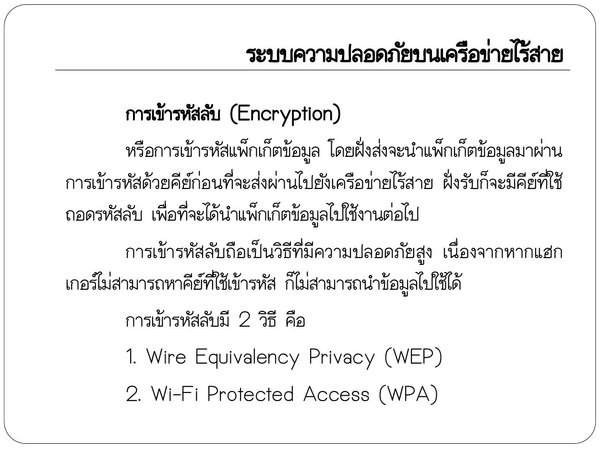
คลิกภาพเพื่อเปิดขยาย
ระบบความปลอดภัยบนเครือข่ายไร้สาย
การเข้ารหัสลับ (Encryption)
หรือการเข้ารหัสแพ็กเก็ตข้อมูล โดยฝั่งส่งจะนาแพ็กเก็ตข้อมูลมาผ่าน
การเข้ารหัสด้วยคีย์ก่อนที่จะส่งผ่านไปยังเครือข่ายไร้สาย ฝั่งรับก็จะมีคีย์ที่ใช้
ถอดรหัสลับ เพื่อที่จะได้นาแพ็กเก็ตข้อมูลไปใช้งานต่อไป
การเข้ารหัสลับถือเป็นวิธีที่มีความปลอดภัยสูง เนื่องจากหากแฮก
เกอร์ไม่สามารถหาคีย์ที่ใช้เข้ารหัส ก็ไม่สามารถนาข้อมูลไปใช้ได้
การเข้ารหัสลับมี 2 วิธี คือ
1. Wire Equivalency Privacy (WEP)
2. Wi-Fi Protected Access (WPA)ทบทวนภาษาไทย: Wireless LAN และ Bluetooth
กลับสารบัญ ↑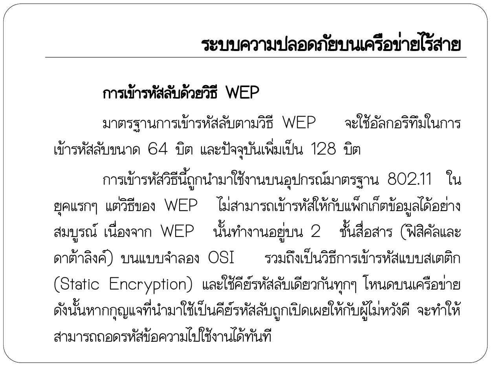
คลิกภาพเพื่อเปิดขยาย
ระบบความปลอดภัยบนเครือข่ายไร้สาย
การเข้ารหัสลับด้วยวิธี WEP
มาตรฐานการเข้ารหัสลับตามวิธี WEP จะใช้อัลกอริทึมในการ
เข้ารหัสลับขนาด 64 บิต และปัจจุบันเพิ่มเป็น 128 บิต
การเข้ารหัสวิธีนี้ถูกนามาใช้งานบนอุปกรณ์มาตรฐาน 802.11 ใน
ยุคแรกๆ แต่วิธีของ WEP ไม่สามารถเข้ารหัสให้กับแพ็กเก็ตข้อมูลได้อย่าง
สมบูรณ์ เนื่องจาก WEP นั้นทางานอยู่บน 2 ชั้นสื่อสาร (ฟิสิคัลและ
ดาต้าลิงค์) บนแบบจาลอง OSI รวมถึงเป็นวิธีการเข้ารหัสแบบสเตติก
(Static Encryption) และใช้คีย์รหัสลับเดียวกันทุกๆ โหนดบนเครือข่าย
ดังนั้นหากกุญแจที่นามาใช้เป็นคีย์รหัสลับถูกเปิดเผยให้กับผู้ไม่หวังดี จะทาให้
สามารถถอดรหัสข้อความไปใช้งานได้ทันทีทบทวนภาษาไทย: Wireless LAN และ Bluetooth
กลับสารบัญ ↑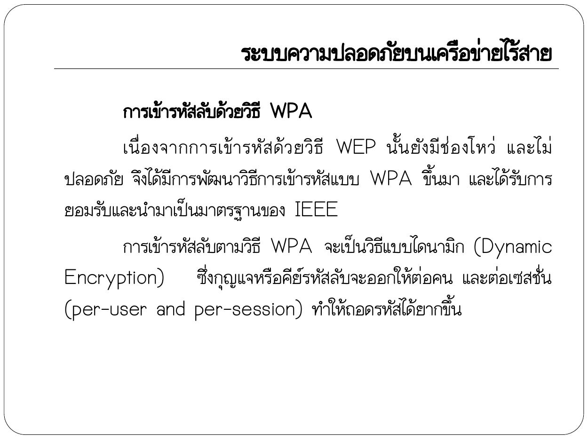
คลิกภาพเพื่อเปิดขยาย
ระบบความปลอดภัยบนเครือข่ายไร้สาย
การเข้ารหัสลับด้วยวิธี WPA
เนื่ อ งจากการเข้ า รหั ส ด้ ว ยวิ ธี WEP นั้ น ยั ง มี ช่ อ งโหว่ และไม่
ปลอดภัย จึงได้มีการพัฒนาวิธีการเข้ารหัสแบบ WPA ขึ้นมา และได้รับการ
ยอมรับและนามาเป็นมาตรฐานของ IEEE
การเข้ารหัสลับตามวิธี WPA จะเป็นวิธีแบบไดนามิก (Dynamic
Encryption) ซึ่งกุญแจหรือคีย์รหัสลับจะออกให้ต่อคน และต่อเซสชั่น
(per-user and per-session) ทาให้ถอดรหัสได้ยากขึ้นทบทวนภาษาไทย: Wireless LAN และ Bluetooth
กลับสารบัญ ↑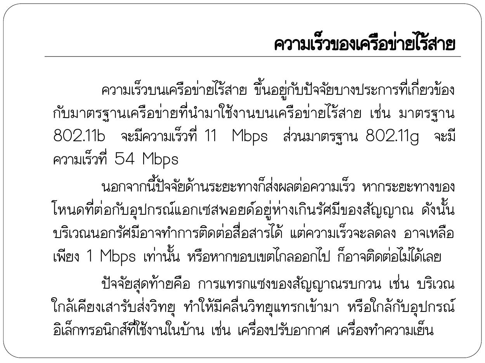
คลิกภาพเพื่อเปิดขยาย
ความเร็วของเครือข่ายไร้สาย
ความเร็วบนเครือข่ายไร้สาย ขึ้นอยู่กับปัจจัยบางประการที่เกี่ยวข้อง
กับ มาตรฐานเครื อข่า ยที่ น ามาใช้ ง านบนเครือ ข่ า ยไร้ สาย เช่ น มาตรฐาน
802.11b จะมีความเร็วที่ 11 Mbps ส่วนมาตรฐาน 802.11g จะมี
ความเร็วที่ 54 Mbps
นอกจากนี้ปัจจัยด้านระยะทางก็ส่งผลต่อความเร็ว หากระยะทางของ
โหนดที่ต่อ กับอุ ปกรณ์ แ อกเซสพอยด์อ ยู่ ห่างเกินรัศ มี ของสัญญาณ ดัง นั้น
บริเวณนอกรัศมีอาจทาการติดต่อสื่อสารได้ แต่ความเร็วจะลดลง อาจเหลือ
เพียง 1 Mbps เท่านั้น หรือหากขอบเขตไกลออกไป ก็อาจติดต่อไม่ได้เลย
ปัจจัยสุดท้ายคือ การแทรกแซงของสัญญาณรบกวน เช่น บริเวณ
ใกล้เ คียงเสารับส่งวิทยุ ทาให้มีคลื่นวิทยุแทรกเข้ามา หรือใกล้กับอุ ปกรณ์
อิเล็กทรอนิกส์ที่ใช้งานในบ้าน เช่น เครื่องปรับอากาศ เครื่องทาความเย็นทบทวนภาษาไทย: Wireless LAN และ Bluetooth
กลับสารบัญ ↑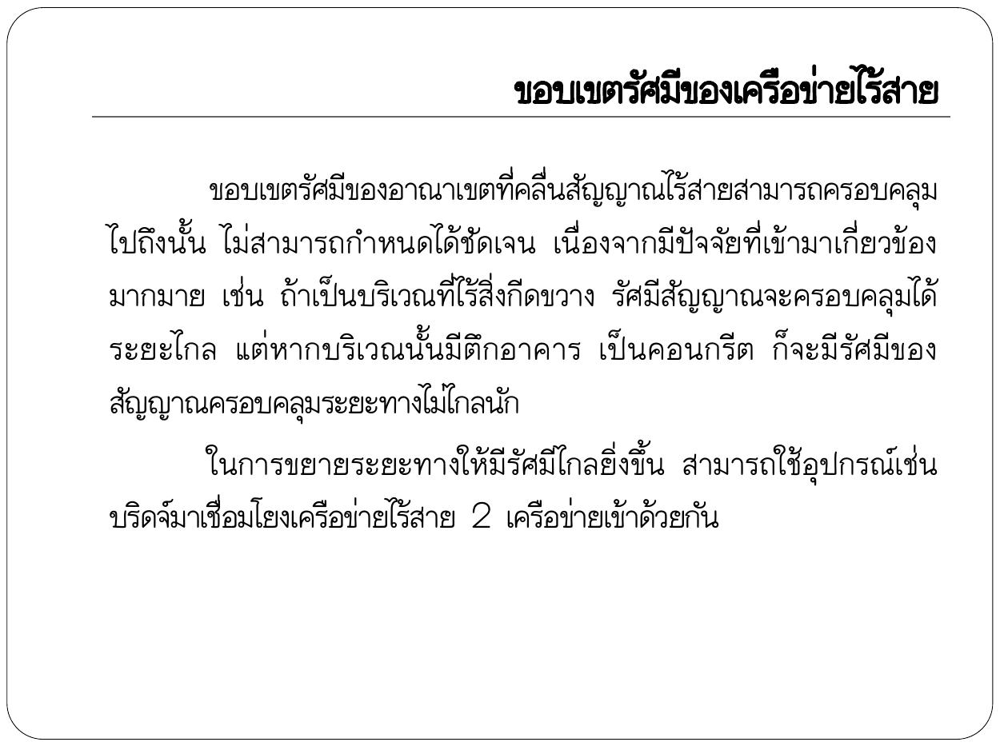
คลิกภาพเพื่อเปิดขยาย
ขอบเขตรัศมีของเครือข่ายไร้สาย
ขอบเขตรัศมีของอาณาเขตที่คลื่นสัญญาณไร้สายสามารถครอบคลุม
ไปถึ ง นั้น ไม่ สามารถก าหนดได้ชัด เจน เนื่ อ งจากมี ปัจจัย ที่เ ข้า มาเกี่ ยวข้อ ง
มากมาย เช่น ถ้าเป็นบริเวณที่ไร้สิ่งกีดขวาง รัศมีสัญญาณจะครอบคลุมได้
ระยะไกล แต่ ห ากบริ เ วณนั้ น มี ตึ ก อาคาร เป็ น คอนกรี ต ก็ จ ะมี รั ศ มี ข อง
สัญญาณครอบคลุมระยะทางไม่ไกลนัก
ในการขยายระยะทางให้มี รัศ มี ไกลยิ่ ง ขึ้ น สามารถใช้อุ ปกรณ์ เ ช่น
บริดจ์มาเชื่อมโยงเครือข่ายไร้สาย 2 เครือข่ายเข้าด้วยกันทบทวนภาษาไทย: Wireless LAN และ Bluetooth
กลับสารบัญ ↑ไม่พบหัวข้อที่ตรงกับคำค้น ลองล้างตัวกรองหรือใช้คำสั้นลง